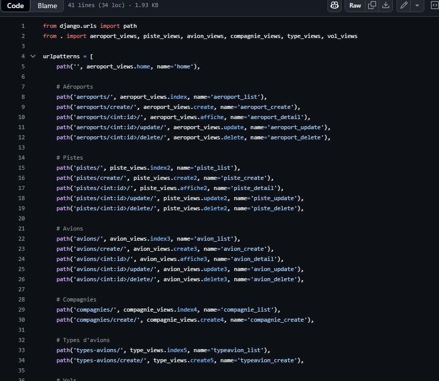
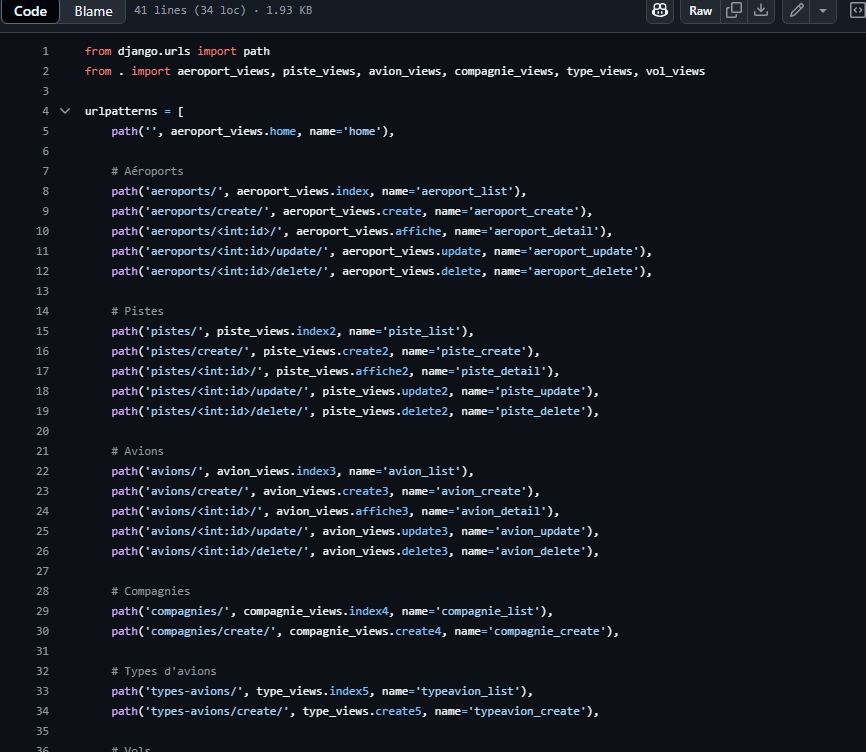

Salut, Je suis
Chahinez Fahmi.
Une étudiante en réseaux et télécommunications
Je découvre chaque jour de nouvelles façons de créer, coder et résoudre des problèmes. J’apprends, je progresse et je partage.
Bienvenue dans mon univers!
Qui suis-je ?
Etudiante en Bachelor de réseaux et télécommunications, je suis passionné par les nouvelles technologies. C'est grace a mon grand frère que j’ai découvert l’informatique, depuis petite j'ai été attirée par ce monde riche en possibilités. C’est tout naturellement que je me suis tourné vers cette formation.
Aujourd’hui, je m’investis pleinement dans mes projets et mes études. Au fil de ma formation je me suis particulièrement intéressée au domaine du cloud et à la cybersécurité.
Mes ambitions
Mon objectif est de devenir une professionnelle capable de concevoir, sécuriser et maintenir des infrastructures. À court terme, je souhaite renforcer mes compétences techniques, À plus long terme, je souhaite contribuer activement à des projets, partager mes connaissances à travers des articles, et continuer à apprendre chaque jour.
Les femmes sont encore sous-représentées dans le secteur des technologies, mais les choses changent. Je suis fière de faire partie de cette nouvelle génération qui casse les stéréotypes et fait entendre sa voix.
Voici quelques projets auxquels j'ai pu collaborer
Ces projets m'ont permis d'acquérir des compétences que nous validons tout au long de l'année.
- C ++
- Arduino
Robot suiveur de ligne
Conception d’un robot capable de suivre automatiquement une ligne noire sur fond blanc à l’aide de capteurs infrarouges. Ce projet m’a permis de travailler sur l’électronique, la programmation embarquée (Arduino/C++) et la logique algorithmique.
J’espère pouvoir collaborer à l’avenir sur des projets plus ambitieux, à plus grande échelle.
Apprentissages couverts :
- Utiliser un système informatique et ses outils
- Traduire un algorithme, dans un langage et pour un environnement donné
- S’intégrer dans un environnement propice au développement et au travail collaboratif
- Utiliser un système informatique et ses outils
- Linux
- Nmap
- Windows
- Wireshark
Admininstrer un réseau informatique à petite échelle
Nous avons configuré un Raspberry Pi 4 pour mettre en place des services réseau : serveur web Apache, partages de fichiers via NFS et Samba, et un accès sécurisé. Nous avons réalisé des diagnostics réseau avec ping, traceroute, Nmap et Wireshark, et mis en place une supervision via une page HTML.
Enfin, nous avons analysé l’infrastructure du réseau, identifié les équipements connectés, et évalué les aspects liés à la sécurité des services et des ports ouverts.
Ce projet m’a permis d’apprendre à utiliser des outils professionnels comme Wireshark, Nmap, SSH et Apache pour configurer, sécuriser et analyser un réseau informatique réel. Ce qui fait partie de la competence "administrer", clé dans ma formation.
Apprentissages couverts :
- Identifier les dysfonctionnements du réseau local et savoir les signaler
- Installer un poste client, expliquer la procédure mise en place
- Configurer les fonctions de base du réseau local
- Maîtriser les rôles et les principes fondamentaux des systèmes d’exploitation afin d’interagir avec ceux-ci pour
la configuration et l’administration des réseaux et services fournis
 

- Linux
- Nmap
- Windows
- Wireshark
Admininstrer un réseau informatique à petite échelle
Ce projet a consisté à développer, en groupe de trois étudiants, une application web permettant d’accéder, d’alimenter et de manipuler un jeu de données via une interface simple et fonctionnelle.
Nous avons mis en œuvre une base de données connectée à un site web développé en HTML/CSS/JS et Python/PHP, hébergé sur une machine virtuelle Linux que nous avons installée et configurée.
Ce projet a mobilisé des compétences en programmation, gestion de données, déploiement de services web, collaboration avec GitHub et rédaction technique
Apprentissages couverts :
- Utiliser un système informatique et ses outils
- Connaître l’architecture et les technologies d’un site Web
- S’intégrer dans un environnement propice au développement et au travail collaboratif
- Traduire un algorithme, dans un langage et pour un environnement donné
Outils que j'utilise
- C++
- SQL
- HTML
- CSS
- JavaScript
- TypeScript
- Git
- Linux
- Windows
Contact
Si vous avez des questions ou des préoccupations, n'hésitez pas à me contacte ! Je suis ouvert à toute opportunité de travail correspondant à mes compétences.